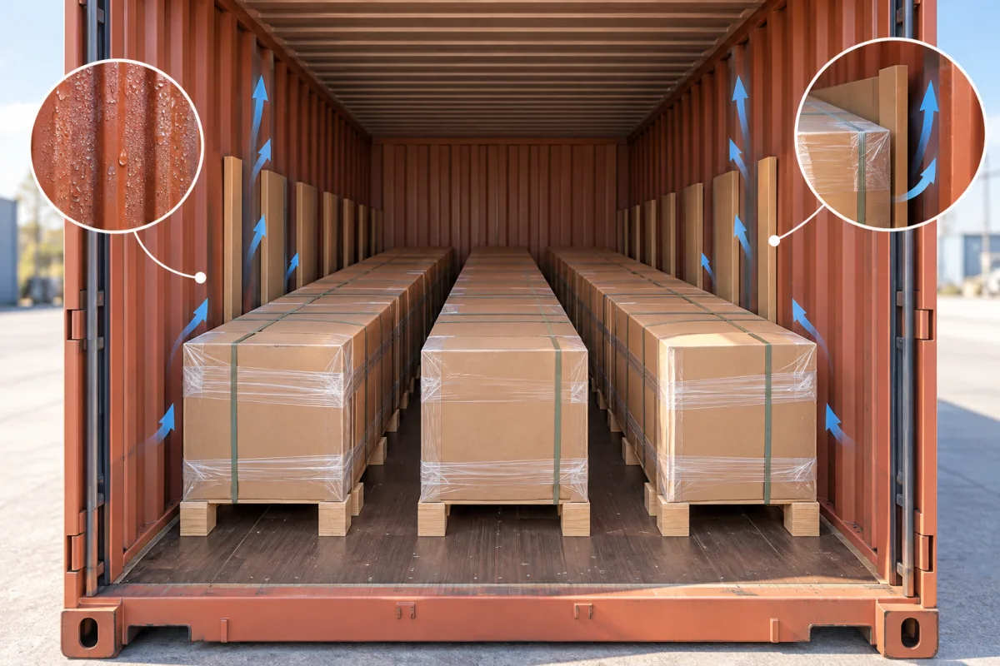

How do you prevent condensation damage in a wall panel container?
A sealed container is not automatically a dry container. Temperature swings and moist cargo or dunnage can create condensation during a sea voyage. Decorative panel cartons may arrive intact outside while the face, edge or printed label shows moisture damage. Prevention starts before loading and continues through arrival inspection.

Use dry panels, dry packaging and a clean, dry container; select protective wrapping and moisture-control measures appropriate to the route and cargo. Photograph the packing and inspect promptly at destination.
Remove moisture before loading
Store cartons and wooden dunnage under cover, away from wet floors and rain. Inspect the container for holes, odor, standing water, rust, residue and damaged seals. If a container is wet or contaminated, reject or correct it before loading. Do not rely on a desiccant to compensate for saturated pallets or cartons. Record the condition in photographs with the container number visible.
Pack for the product and route
Long panels may need support against bending, while glossy sheets need face protection. Use a load plan that prevents movement and leaves critical labels readable. Where condensation risk is high, consider the CTU Code’s guidance on moisture management and consult the freight and packaging specialists about liners, wrapping or desiccants. The correct measure depends on voyage, climate transition, cargo moisture and package design.
Make arrival inspection actionable
Ask the buyer to photograph the seal before opening, then the load, cartons and any damp areas. Separate transport damage from installation or storage damage and retain representative samples. If moisture is found, dry and assess the affected material before use; do not install panels over a damp substrate. A clear inspection record supports both quality correction and any insurance or carrier process.
Illustrative buyer situation
A shipment travels from a humid loading port to a cooler sea route and then arrives at a warm South American destination. The cartons were loaded after rain, and the receiver finds damp labels. A useful investigation begins with numbered loading photos, container condition, seal record and arrival photographs. For the next shipment, the exporter and freight partner should review dry dunnage, packaging and route-specific moisture control rather than simply adding more desiccant to the same wet load.
Buyer checklist before ordering
- Dry cargo, cartons and dunnage
- Container condition and numbered loading photos
- Route-specific wrapping and moisture-control decision
- Arrival inspection and evidence retention
Save the approved sample, product code and document references with the purchase order. A catalog helps shortlist a finish but does not establish the final specification, local acceptance, price or delivery terms.
Common buyer questions
Will a desiccant bag prevent all container sweat?
No. It cannot offset wet cargo or poor packing; route and load conditions matter.
Should every panel be shrink-wrapped?
Choose wrapping based on the cargo and moisture plan; trapping moisture inside can be counterproductive.
What should the buyer inspect first?
Check seal, container interior and carton condition before unloading or installing the panels.
Compare the range and request the exact specification
Browse the relevant product catalog (PDF, English), then tell Luvie the destination market, room or project use, approximate quantity and the finish you want to sample. We can discuss which current SKU and documents are available; do not assume a catalog image establishes certification or a guaranteed lead time.
Turn the question into a verifiable product brief.
Send the application and target market so the conversation starts with a specific product, sample and evidence request.
Ask Luvie about this use